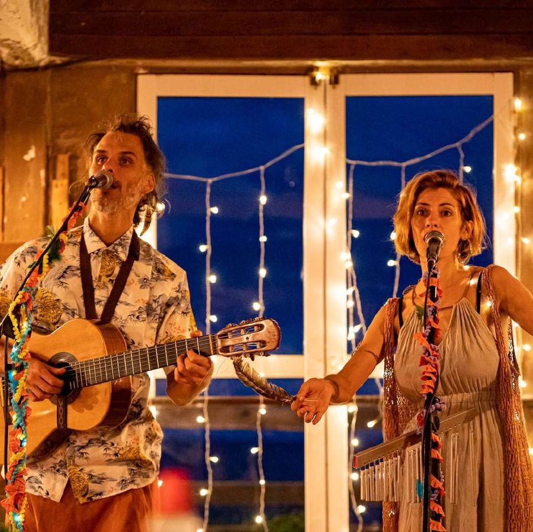
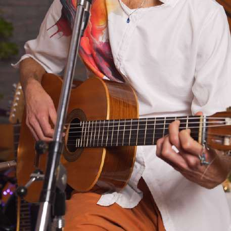
Set 01
Acústico
Un clima introspectivo, cálido e íntimo, que invita a la contemplación y a la reflexión.
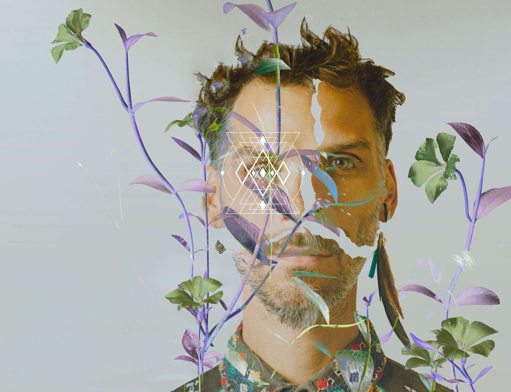
Música de luz
Canciones autorales para experimentar el poder sanador y transformador de la música y las palabras.
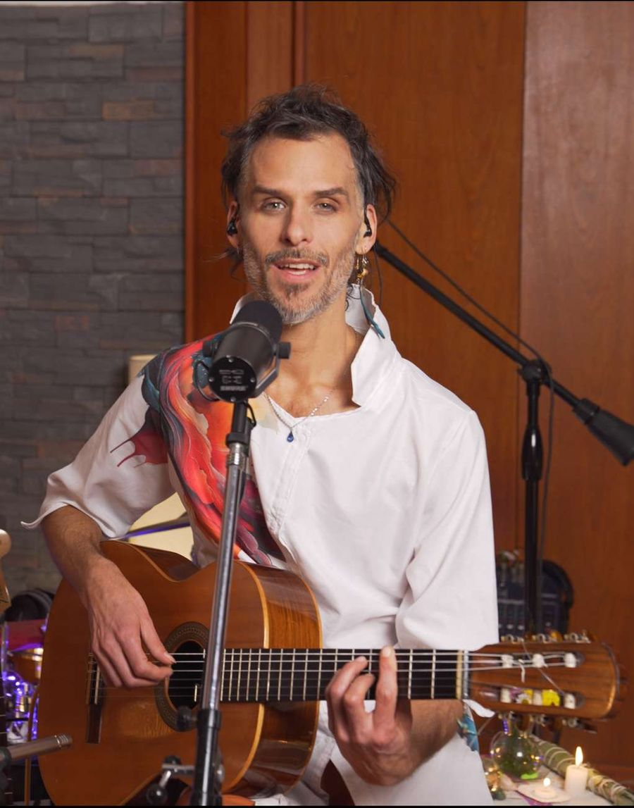
La propuesta
Canciones autorales de carácter sensible y profundo, en su más alta vibración e intención.
En distintos formatos —solista, dúo o banda— el concierto se adapta a las necesidades de cada encuentro. Propone dos climas sonoros: una primera parte con guitarra y voz, cálida e íntima, y una segunda en la que se suman pistas y samplers que, entretejidos con los instrumentos acústicos, invitan a danzar.
También suma canciones a pedido: covers, mantras, canciones medicina y música instrumental.
Formatos
El mismo universo de canciones, en la escala que pida cada encuentro: desde una ceremonia íntima hasta un escenario de festival.
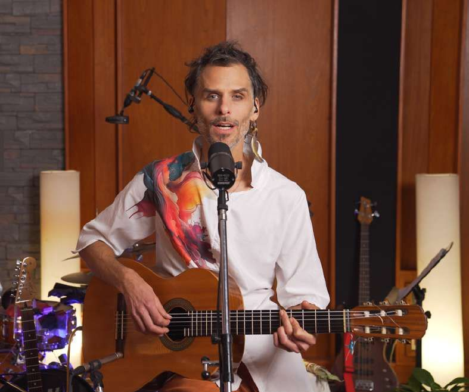
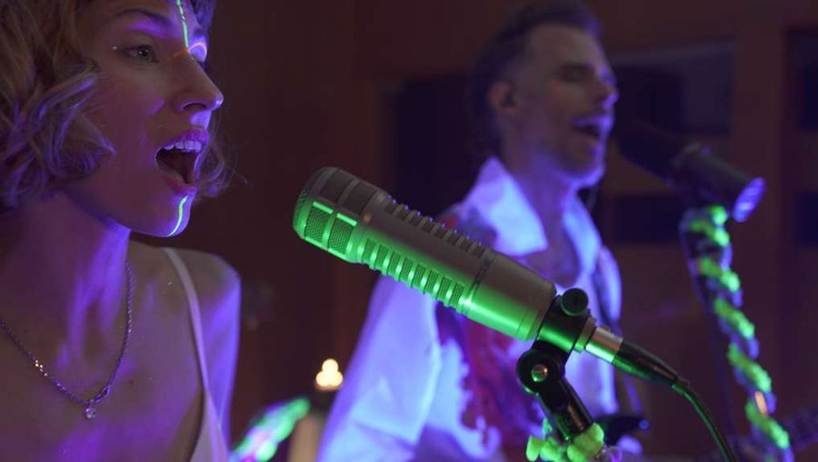
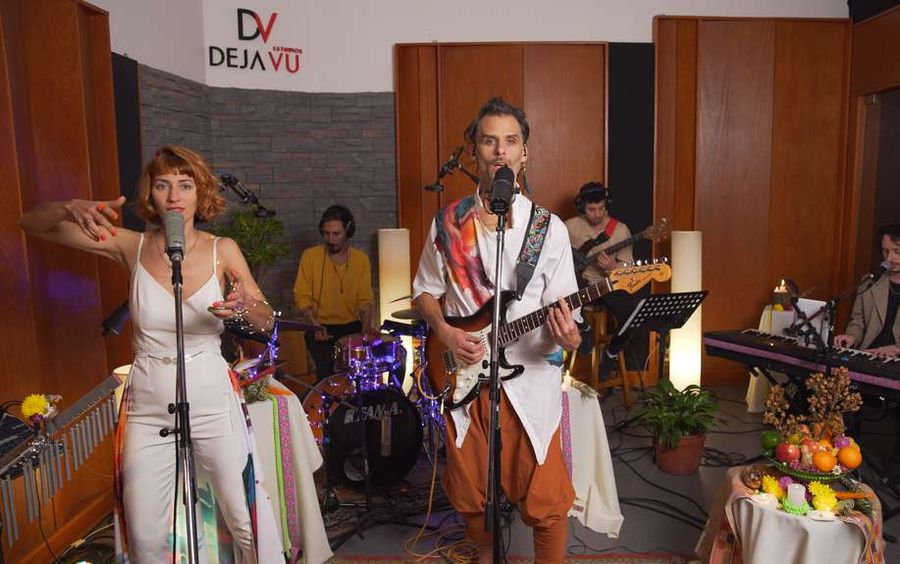
Sets


Set 01
Un clima introspectivo, cálido e íntimo, que invita a la contemplación y a la reflexión.
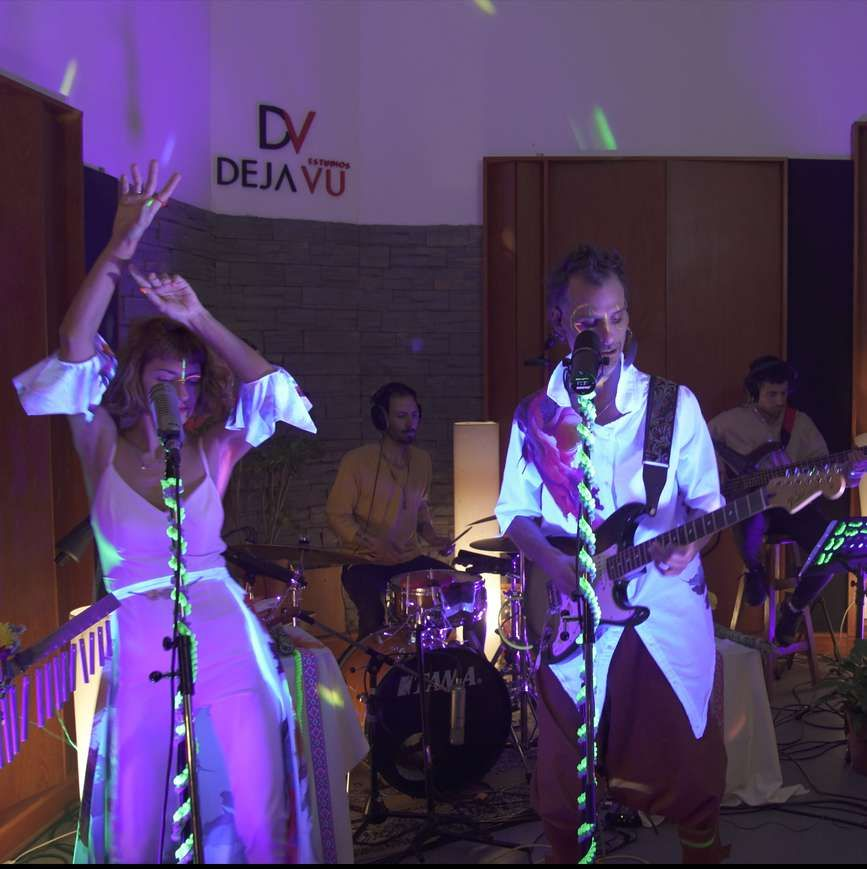
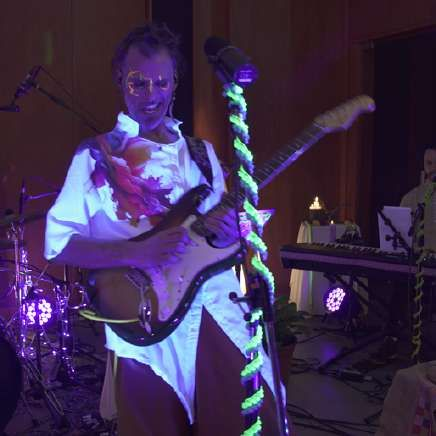
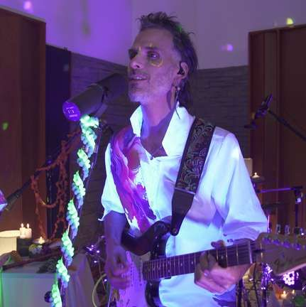
Set 02
Los instrumentos acústicos se mezclan con pistas y sampler que tejen una textura electrónica: el mensaje de su poética llega a través del movimiento del cuerpo y la danza.
Ambos sets pueden ofrecerse por separado o integrados en un mismo concierto.
Experiencias
Propuestas propias y en colaboración con otr@s terapeutas.
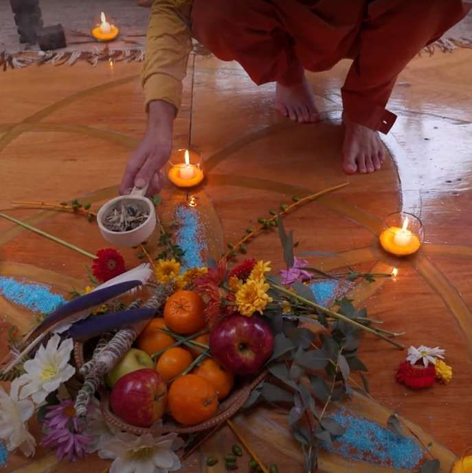
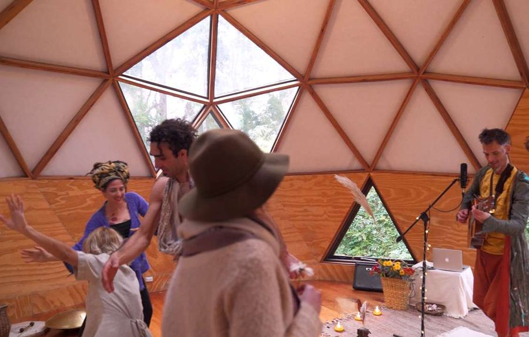
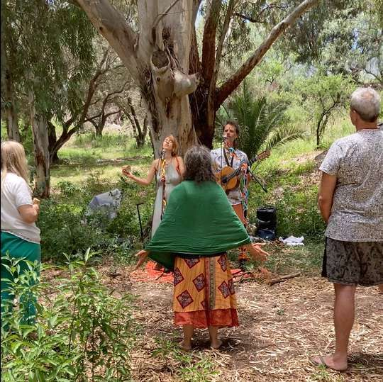
Trayectoria
Su obra fue reconocida por Jesús Hidalgo, uno de los máximos referentes internacionales de la música medicina.
Agrupaciones colaboradoras: @nacion.quintosol y @frecuenciauritorco.
Se presentó en eventos holísticos, festivales, ceremonias de sanación y teatros de distintas provincias del país, Gran Buenos Aires y CABA.
Audiovisual
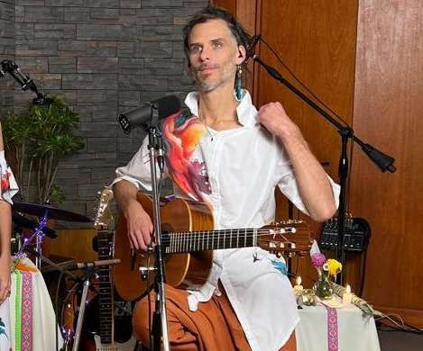
Biografía
Un artista en constante movimiento.
Su música es un canal expresivo que reza por maximizar el potencial humano, soñar nuestra visión más elevada y manifestarla en nuestro hermoso planeta.
Crear juntxs un puente para conectarnos con lo divino.
Contacto
Dirección artística y womanager
Marilen Ife · +54 11 5573 0260
Hernán: +54 11 5807 2130
Escribir por WhatsApp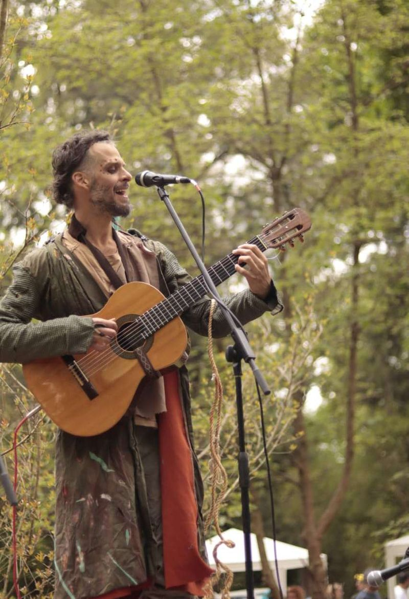
Hernán Onírico · Música de luz